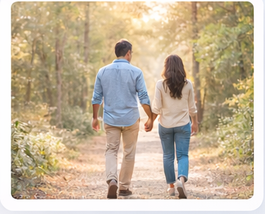

Uma proposta de fim de semana para casais, vivida em vários países, centrada no reencontro do casal um com o outro e com Deus.
O Fortalecimento Matrimonial, que carinhosamente chamamos de Forta, teve origem como um projeto de Schoenstatt no México, em dezembro de 1985.
De lá espalhou-se até ao Chile, Costa Rica, Paraguai, Equador, Argentina, Estados Unidos da América, Bolívia, Brasil, Alemanha, Itália, Espanha e Portugal.
Em 2015 chega a Espanha, a partir duma experiência na Costa Rica.
Em setembro de 2016 realiza-se o primeiro Fortalecimento Matrimonial em Espanha.
Em 2018 acontece o primeiro Fortalecimento Matrimonial ibérico com a participação de 4 casais de Portugal (Lisboa).
Em abril de 2027 – Lisboa avança com o 1º Fortalecimento Matrimonial Portugal.

Um encontro de fim-de-semana
O Fortalecimento Matrimonial é um encontro de fim de semana que permite aos casais reencontrarem-se e fortalecerem o seu relacionamento com Deus, aprofundando o seu vínculo. Está pensado para casais com o sacramento do matrimónio que enfrentam os desafios do dia-a-dia.
Durante este fim de semana, todos os elementos se conjugam para que os casais voltem a tomar consciência das qualidades do seu cônjuge e da história que partilham.
Entre as diversas atividades, acompanhados por um sacerdote, uma Irmã de Maria e vários casais voluntários, são partilhadas experiências, alegrias e desafios do matrimónio.
É um encontro que ajuda o casal a reencontrar-se, aprofundar e valorizar o dom do Sacramento Matrimonial e a sua relação com Deus.
O que acontece neste fim-de-semana não se revela — para que os casais possam ser surpreendidos e viver uma experiência que se vai revelando em cada dia.
Redescobrir que a felicidade no casamento é possível.
Fortalecer o relacionamento, reacendendo a chama e renovando o casamento com pequenos gestos e surpresas.
Descobrir a importância de ter Deus no casamento.
Compreender que todos têm dificuldades e que é possível superá-las com vontade e compromisso.
Valorizar o que já construíram como casal.
Partilhar sentimentos num ambiente acolhedor, ajudando a curar feridas do passado.
Destina-se a casais casados pela Igreja que desejam fortalecer o seu matrimónio.
Este encontro é pensado para casais que desejam reencontrar-se um com o outro e com Deus.
É especialmente indicado para casais que sentem desgaste na relação e procuram renovar o amor, o sacramento do matrimónio e a sua relação com Deus.
Venham preparados para uma surpresa!
